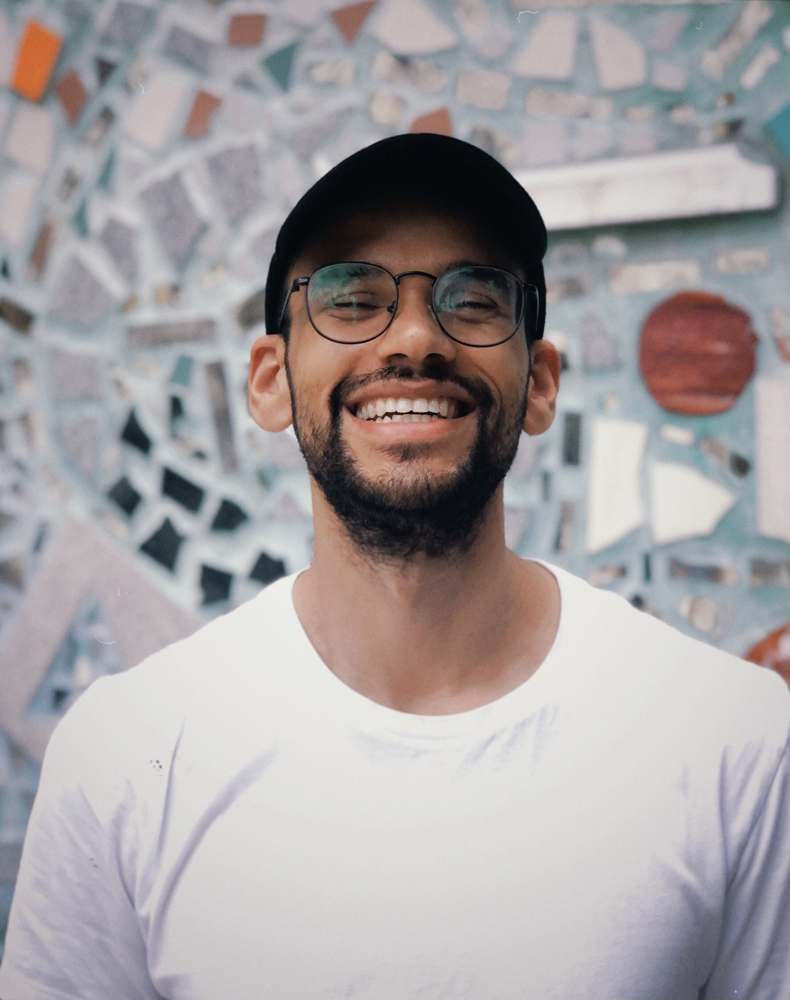

Hi, I'm Yoel. I'm a scientist and a builder (I would say engineer but that word is over-overloaded). I have a PhD in Neuroscience from Princeton University, where I specialized in computational neuroscience applied to systems neuroscience tasks and data. I am currently working as a Bioinformatician. In my spare time right now I'm building some open source tools and some other to-be-announced things. If you'd like to get in contact you can reach me at yoelsanchez06 at gmail dot com.
*About me before the about me*: Before embarking on a PhD, I worked as a research assistant for four years—first at MIT and then at Princeton. Prior to that, I completed a BA in Psychology at Rutgers–Newark, where I was introduced to the world of academia by working in the lab of Will Graves. Even before that, I earned an associate's degree at Passaic Community College, not because I wanted to be practical and save money during undergrad, but because I was a derp in high school and thought my life afterward would entail joining the military. Going even further back, I grew up in Passaic, New Jersey, and was born in Cuba. I am the first in my family to graduate from highschool, college, and get a PhD. Needless to say this has been a long and challenging journey for many reasons!